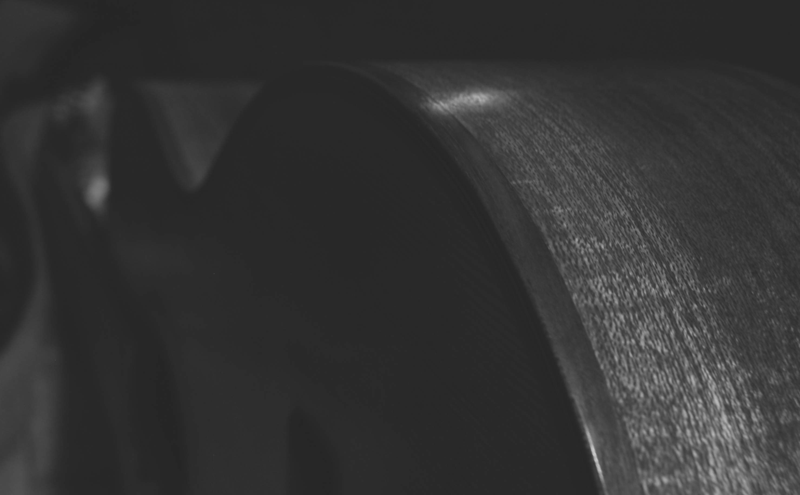

Introducció

Sóc Lutier perquè sempre m'he dedicat a la música, al treball amb les mans i a la tranquil·litat. He polit aquesta vocació currant de valent, guiat per altres Lutiers experimentats. D'ells he après a fer les coses ben fetes, això i que al taller s'hi ha de deixar fumar. Si el teu instrument acaba en una empresa d'aquestes enormes, no se'l tractarà amb el mateix carinyo, ni tu tindràs els mateixos resultats.
Feina
Durant una bona temporada he anat i tornat del Talladell per construïr violins i rabelins amb el Ramon. Al meu taller hi arriben encàrrecs per fer guitarres espanyoles i elèctriques, baixos i ukeleles. De vegades m'he hagut de dedicar a fer feina de salvament, reparant tota mena d'instruments en tots els estats que et puguis imaginar. Que em portes un contrabaix partit per la meitat? "pues" s'arreglarà! Aquesta és la meva filosofia!
Sobre mi
Si bé de petit tocava la flauta travessera a l'Auditori de Lleida, quan vaig créixer em van poder les ànsies d'acaparar les mirades als concerts de rock, així que em vaig passar al baix. Noble instrument, ell i el tabac no m'han abandonat mai. Junts ens hem tirat a les espatlles una bona quantiat de bolos per tot el territori. Anant amb la C-15 tant amunt i avall, hauria pogut dedicar-me a la cartografia, però al final he preferit assentar el cap a La Bordeta i ser Lutier.
Contacte
Correu electrònic: Arnaumartinezcoslutier@gmail.com
Missatges Directes a Instagram Instagram
Telèfon: 666 666 666